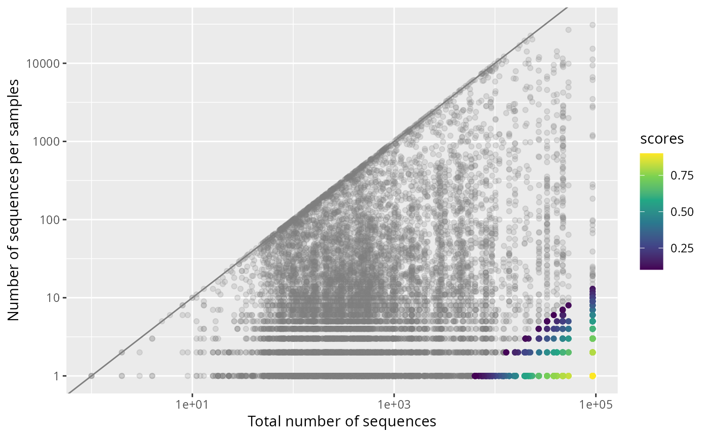

Diagnostic scatter plot for the output of uncross2_pq() run with
return_scores = TRUE. Each point is one non-zero occurrence (an OTU in a
sample), placed by the OTU's total abundance across the object (x) and the
read count of that occurrence (y), and coloured by its UNCROSS2 score.
Occurrences scoring at or below tmin (kept as genuine signal) are drawn in
grey; those at or above tmin (flagged as cross-talk) are coloured on the
score scale. The grey 1:1 line marks where an occurrence equals the OTU
total: genuine "source" samples sit near it, cross-talk sits far below. Both
axes are on a log10 scale.
Arguments
- scores_list
(list, required) The list returned by
uncross2_pq()withreturn_scores = TRUE. Must containold_physeq(the input object), thescoresmatrix, and thetminthreshold.- grey_non_significant
(logical, default
TRUE) Draw occurrences scoring at or belowtminin grey rather than on the colour scale.
Value
A ggplot2::ggplot object.
See also
uncross2_pq(), which produces the scored list.
Examples
library(MiscMetabar)
data(data_fungi)
# \donttest{
res <- uncross2_pq(data_fungi, return_scores = TRUE)
#> ℹ uncross2 (cut): removed 984 reads across 250620 flagged cells (occurences) (f = 0.01, tmin = 0.1, k = 1).
plot_uncross2_scores(res)
#> Taxa are now in rows.

# }